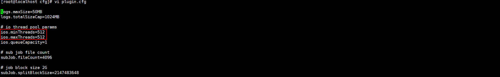

The HDFS fails to execute the index job.
Before an index job is executed, the idle memory of the host where the client is installed is used up. You need to ensure that the memory of the host where the client is installed is not used up before the job is executed. Before executing an index job, you are advised to reserve at least 4 GB memory to ensure that the index job can run properly.
total used free shared buff/cache available Mem: 62 2 0 0 60 60
The following is an example of the configuration file.
